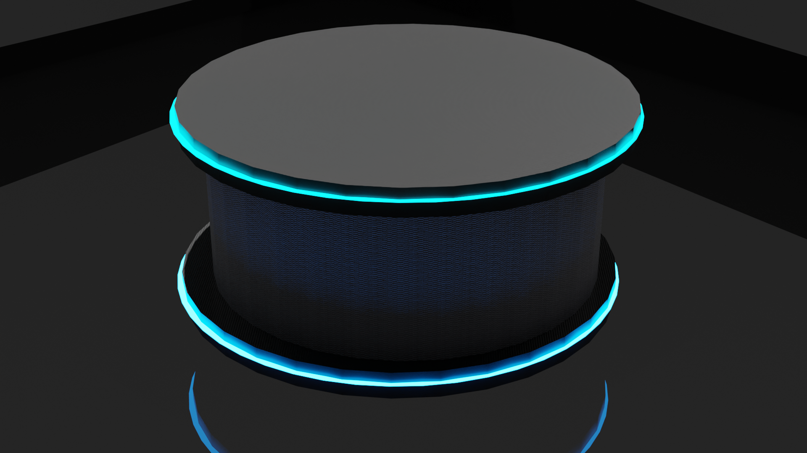

IQ TECH innovations is a company that creates different technological advancements, such as PC addons, AIs and voice assistants. We aim to refine our technology for better use and a more wide range of content that existing technologies do not provide.
The IQ Versa smart speaker is an AI voice assistant that uses its own Operating system (OS). Like its predecessors Google and Alexa, IQV can be used to initiate commands like playing a video/song, with its circular screen acting as a tablet with a touchpad. However, the IQ Versa smart speaker can be customisable in many different ways, such as a custom voice with its inbuilt ai, custom rgb lights to change the colour around the touchpad to any colour you want and can be used as a tablet, smoke detector, as well as just a regular speaker. Which makes it different to existing snart speakers such as Alex and Google next home.
what our product will look like:
